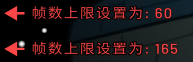
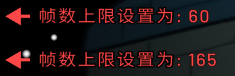

原版游戏客户端默认将帧率限制在60FPS，启用此功能后可解除该限制，最高支持165FPS的流畅画面表现。
高帧率模式能显著提升游戏动画的顺滑度和操作响应速度。
FinalSuspect
解锁帧数限制
解锁帧数限制功能示意图：
原版游戏客户端默认将帧率限制在60FPS，启用此功能后可解除该限制，最高支持165FPS的流畅画面表现。
高帧率模式能显著提升游戏动画的顺滑度和操作响应速度。
解锁帧数限制功能示意图：
